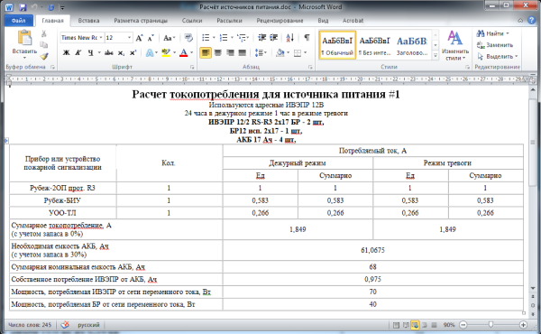

Калькулятор источников питания (offline)
Калькулятор служит для подбора источников питания в зависимости от подключаемой нагрузки и необходимому времени резервирования. (версия для скачивания, обладает более расширенным функционалом, чем online-версия)Калькулятор служит для подбора источников питания в зависимости от подключаемой нагрузки и необходимому времени резервирования. В калькуляторе имеются необходимые параметры запаса по токопотреблению и времени резервирования, формула для расчета времени работы дежурного и тревожного режима, тип системы источника питания.
В качестве подключаемой нагрузки можно выбрать устройство из списка или найти его через строку поиска.
Помимо имеющегося в базе оборудования, можно добавлять новые устройства. При заполнении имени и характеристик токопотребления, устройство добавляется в базу пользователя и может использоваться для расчета источника питания.

Для удобства пользователей в калькуляторе реализована возможность подбора нескольких источников питания. Для каждой новой группы оборудования будет подсчитан свой источник питания.
Полученные расчеты токопотребления и задание на электроснабжение для всех групп оборудования можно выгрузить в формате «.doc» и после небольшого редактирования включить в выходную документацию проекта.
 К списку решений